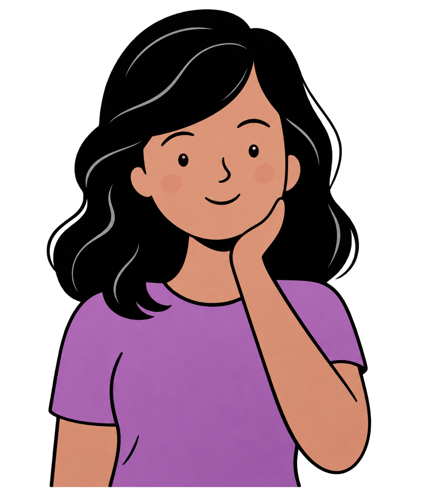

Informação, acolhimento e caminhos de apoio
Conhecimento também é uma forma de proteção.
Um espaço para encontrar informação confiável, conteúdos educativos e caminhos de apoio. Aqui, você pode ouvir, aprender e descobrir onde buscar acolhimento.

Uma rede de informação e cuidado
Você não precisa saber tudo agora. Comece por aqui.
Reunimos materiais e serviços para ajudar você a encontrar orientação, fortalecer sua autonomia e conhecer seus direitos.
Conheça os canais de apoioPrecisa de orientação?
Canais de apoio
Encontre serviços de atendimento e saiba onde buscar ajuda. Em situações de emergência, procure os serviços indicados abaixo.
Esta página reúne informações de referência e não substitui atendimento especializado ou orientação profissional.
Escuta e informação
Podcasts
Conversas, histórias e conteúdos em áudio para informar, acolher e ampliar perspectivas.
Conteúdo para assistir
Vídeos
Materiais audiovisuais para conhecer direitos, identificar redes de proteção e compartilhar informação.
Aprendizado e autonomia
Cursos e capacitações
Oportunidades gratuitas de formação, desenvolvimento profissional e fortalecimento da autonomia.
Informação para consultar e compartilhar
Nossos materiais
Acesse gratuitamente materiais informativos preparados para orientar e apoiar.
Acessar nosso DriveFormação e oportunidades
Links úteis
Acesso direto a portais de apoio, capacitação e desenvolvimento profissional.